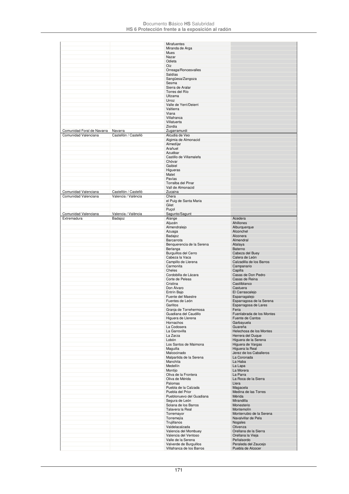

DB-HS Salubridad · edición 2022-06-14 · capa oficial
Documento DB-HS-oficial · SHA-256 del PDF 68df3caacc95f71aee2ec1ba7b2c65ae66155c21e3a8785521b8fdd4fd640d3b
Página física 171 de 184.
Copia fiel del PDF fuente · Fuente oficial
Ficha de la disposición en la fuente oficial
Formato: Texto de la página (Markdown)
Documento Básico HS Salubridad HS 6 Protección frente a la exposición al radón 171 Mirafuentes Miranda de Arga Mues Nazar Odieta Oiz Orreaga/Roncesvalles Saldías Sangüesa/Zangoza Sesma Sierra de Aralar Torres del Río Ultzama Urroz Valle de Yerri/Deierri Valtierra Viana Villafranca Villatuerta Ziordia Comunidad Foral de Navarra Navarra Zugarramurdi Comunidad Valenciana Castellón / Castelló Alcudia de Veo Algimia de Almonacid Almedíjar Arañuel Azuébar Castillo de Villamalefa Chóvar Gaibiel Higueras Matet Pavías Torralba del Pinar Vall de Almonacid Comunidad Valenciana Castellón / Castelló Zucaina Comunidad Valenciana Valencia / València Chera el Puig de Santa Maria Gilet Puçol Comunidad Valenciana Valencia / València Sagunto/Sagunt Extremadura Badajoz Alange Acedera Aljucén Ahillones Almendralejo Alburquerque Azuaga Alconchel Badajoz Alconera Barcarrota Almendral Benquerencia de la Serena Atalaya Berlanga Baterno Burguillos del Cerro Cabeza del Buey Cabeza la Vaca Calera de León Campillo de Llerena Calzadilla de los Barros Carmonita Campanario Cheles Capilla Cordobilla de Lácara Casas de Don Pedro Corte de Peleas Casas de Reina Cristina Castilblanco Don Álvaro Castuera Entrín Bajo El Carrascalejo Fuente del Maestre Esparragalejo Fuentes de León Esparragosa de la Serena Garlitos Esparragosa de Lares Granja de Torrehermosa Feria Guadiana del Caudillo Fuenlabrada de los Montes Higuera de Llerena Fuente de Cantos Hornachos Garbayuela La Codosera Guareña La Garrovilla Helechosa de los Montes La Zarza Herrera del Duque Lobón Higuera de la Serena Los Santos de Maimona Higuera de Vargas Maguilla Higuera la Real Malcocinado Jerez de los Caballeros Malpartida de la Serena La Coronada Manchita La Haba Medellín La Lapa Montijo La Morera Oliva de la Frontera La Parra Oliva de Mérida La Roca de la Sierra Palomas Llera Puebla de la Calzada Magacela Puebla del Prior Medina de las Torres Pueblonuevo del Guadiana Mérida Segura de León Mirandilla Solana de los Barros Monesterio Talavera la Real Montemolín Torremayor Monterrubio de la Serena Torremejía Navalvillar de Pela Trujillanos Nogales Valdelacalzada Olivenza Valencia del Mombuey Orellana de la Sierra Valencia del Ventoso Orellana la Vieja Valle de la Serena Peñalsordo Valverde de Burguillos Peraleda del Zaucejo Villafranca de los Barros Puebla de Alcocer

Datos candidatos: compruebe celdas y notas en el PDF.